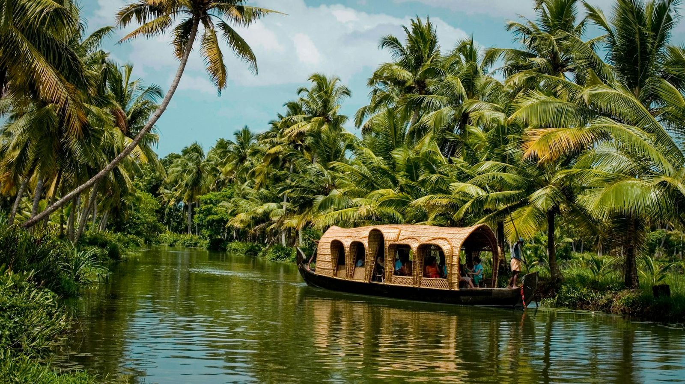
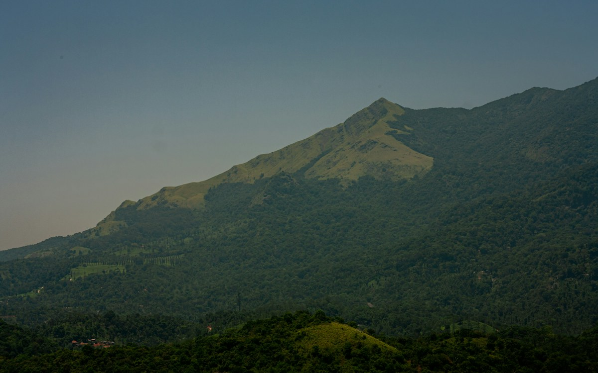

A LITTLE CLOSER TO GOD’S OWN COUNTRY
Kerala, at
your pace.
Tea hills in the morning. Backwaters by sundown.
Come find your kind of Kerala with Canty Tours.
ONE KERALA. SO MANY WAYS TO FEEL IT.
Follow the green.
Find your happy place.
From mist on the tea hills to a slow bend in the river.
Choose a place to explore the journeys that take you there.
YOUR KERALA STORY STARTS HERE
A few days. A different rhythm.
Short escapes, family time and a little romance.
Compare sample routes, then make one your own.
Your next trip is still out there.
Try a wider search, or ask us to create a route around your plans.
Sample itineraries, made to be personalised. Prices, hotels, activities and availability are confirmed in your personalised quotation. Flights are not assumed to be included.

More Kerala.THE CANTY WAY
MAKE SPACE FOR THE MOMENTS BETWEEN
More than a route.
Your kind of holiday.
A second cup of tea with a view. A long lunch by the water. An afternoon with nowhere else to be. Kerala is a place to savour, and your itinerary should leave room for it.
Pair the hills with the backwaters, linger in Wayanad, or leave a few days for the coast.
Your people. Your pace.
A family break, your honeymoon, or a few days with friends—tell us who’s coming and how you like to travel.
The details, in the open.
Discuss stays, a private vehicle, houseboat options and activities. Your personalised quote sets out what’s included.
A conversation, not a checkout.
Talk through your dates and ideas directly with Canty Tours on WhatsApp.
KERALA AT HEART. INDIA ON THE HORIZON.
There’s a whole India beyond.
Another landscape, another story.
Our journey ideas reach further, too.
FROM “LET’S GO” TO YOUR OWN ITINERARY
Your Kerala
story starts
with a hello.
Tea hills, a houseboat, a few days by the sea?
Tell us what you have in mind. We’ll take it from there.
Planning somewhere else in India? You’re in the right place, too.
+91 89216 11825 ↗Prefer to keep it simple?
Say hello on WhatsApp ↗
A LITTLE KERALA KNOW-HOW
Before you
follow the green.
From your first arrival to the last sunset.
Let’s talk through your plans ↗
How many days should I spend in Kerala?+
Our 4-day route pairs Munnar with Alappuzha. With 5–6 days, you can add Thekkady or spend longer around Kochi and the backwaters. Allow a week for hills, backwaters and the coast, or focus a shorter break on Wayanad. We’ll shape the route around your arrival times and preferred pace.
When is a good time to visit Kerala?+
November to February is a popular window for milder weather. Monsoon months bring greener landscapes and rain, so outdoor activities and road journeys need flexibility. Your best dates depend on the places and experiences you choose. Kerala Tourism’s planning advice ↗
Where should I arrive and depart?+
Kochi is a useful starting point for Munnar and the central Kerala backwaters. A journey ending on the southern coast can finish via Thiruvananthapuram. For Wayanad, discuss Kozhikode or Kannur. Confirm the route and transfer time with us before booking your tickets.
Should I choose a houseboat or a backwater resort?+
A daytime cruise gives you time on the water while keeping a hotel or resort as your base. An overnight houseboat adds a night on board; boats generally moor in the evening. Discuss the cruise route, private or shared use, meals and air-conditioning hours before choosing. Houseboat stays are optional in our sample plans.
Can I customise a Kerala itinerary?+
Yes. Use a sample route as a starting point, then share your dates, group details and interests. Ask about slower transfers, family-friendly stays, honeymoon ideas or more time in one destination. Your quote will confirm the agreed arrangements.
How do pricing, inclusions and booking work?+
Request a personalised quote through the planner or WhatsApp. Prices depend on your dates, stays, transport and activities. Hotels, flights, meals and experiences are included only when listed in your quote. Review inclusions, exclusions, payment and cancellation terms before paying. An enquiry does not confirm a booking.
Can you plan holidays elsewhere in India?+
Absolutely. Kerala is our main focus, and you can also explore Rajasthan, Goa, Ladakh, Sikkim and the Golden Triangle here. Tell us about any other Indian destination you have in mind, or explore beyond Kerala ↗.